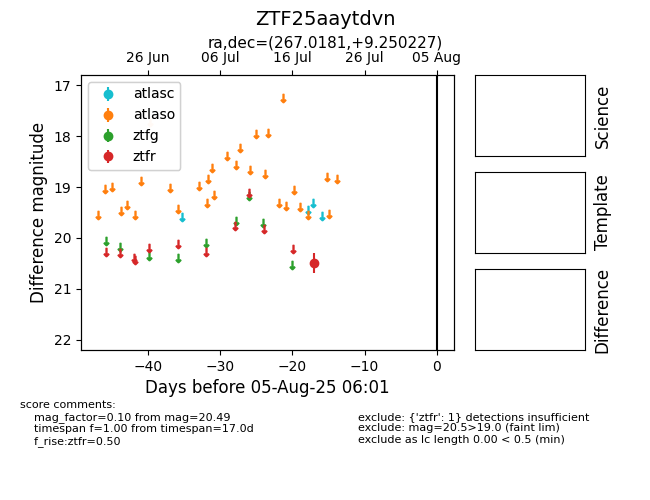

Target ZTF25aaytdvn at 2025-08-05 06:01, see:
FINK: fink-portal.org/ZTF25aaytdvn
Lasair: lasair-ztf.lsst.ac.uk/objects/ZTF25aaytdvn
ALeRCE: alerce.online/object/ZTF25aaytdvn
alt names
ZTF25aaytdvn (ztf,fink)
coordinates:
equatorial (ra, dec) = (267.0181,+9.25023)
galactic (l, b) = (34.1512,+18.24516)
photometry
last ztfr=20.49
1 ztfr detections
